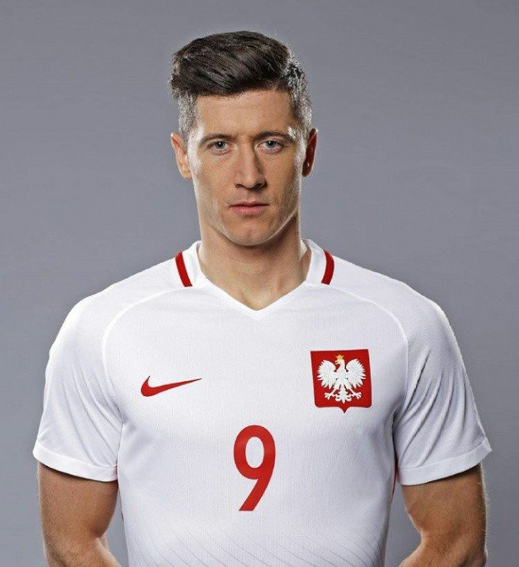
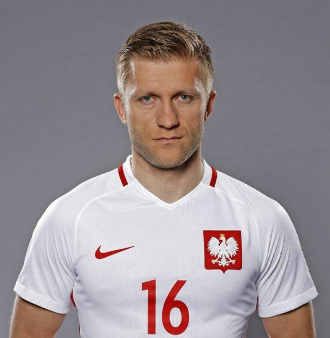
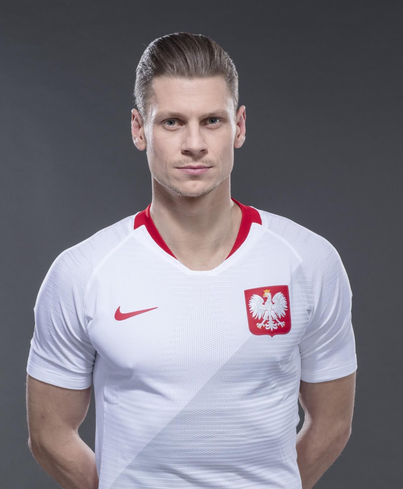

Robert Lewandowski (born 21 August 1988) is a Polish professional footballer who plays as a striker for Bayern Munich and is the captain of the Poland national team. After being the top scorer in the third and second tiers of Polish football with Znicz Pruszków, he moved to top-flight Lech Poznań, and was the top scorer in the league as they won the 2009–10 Ekstraklasa. In 2010, he transferred to Borussia Dortmund for a reported €4.5 million, where he won honours including two consecutive Bundesliga titles and a season as the league's top goalscorer. In 2013, he earned with Borussia a spot in the 2013 UEFA Champions League Final, a tournament in which he was the second top goalscorer, behind only Cristiano Ronaldo.
Jakub "Kuba" Błaszczykowski (born 14 December 1985) is a Polish professional footballer who plays as a winger for German club VfL Wolfsburg and the Poland national team. He started his professional football at Wisła Kraków establishing himself at a young age. In 2007, he joined Borussia Dortmund, where he spent the majority of his career, making over 250 appearances and winning two Bundesliga titles, two DFL-Supercups, and one DFB-Pokal. Błaszczykowski was twice named Polish Footballer of the Year in 2008 and 2010. With 104 appearances, he is the most capped player for Poland, and captained them as they co-hosted UEFA Euro 2012, while also appearing at UEFA Euro 2016 and the 2018 FIFA World Cup.
Łukasz Piotr Piszczek (born 3 June 1985) is a Polish footballer who plays as a right-back for Borussia Dortmund. He also played for the Poland national team, making his debut in 2007 and going on to receive over 60 caps. He was also selected for four tournaments during his time with the national team, playing in three UEFA European Championships and the 2018 FIFA World Cup. He confirmed his retirement from international football in 2018 following the conclusion of the FIFA World Cup.